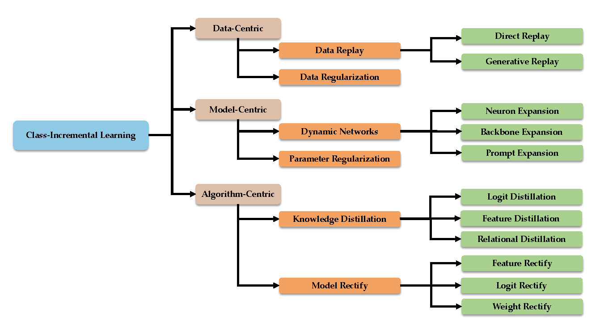

Dataset overview
The Cityscapes Dataset focuses on semantic understanding of urban street scenes. In the following, we give an overview on the design choices that were made to target the dataset’s focus.
The Cityscapes Dataset is intended for
- assessing the performance of vision algorithms for major tasks of semantic urban scene understanding: pixel-level, instance-level, and panoptic semantic labeling;
- supporting research that aims to exploit large volumes of (weakly) annotated data, e.g. for training deep neural networks.
This dataset recording and annotation methodology was carefully designed to capture the high variability of outdoor street scenes. Several hundreds of thousands of frames were acquired from a moving vehicle during the span of several months, covering spring, summer, and fall in 50 cities, pri- marily in Germany but also in neighboring countries. Cordts et. al. deliberately did not record in adverse weather conditions, such as heavy rain or snow, as they believe such conditions to require specialized techniques and datasets.
In this work, we presented Cityscapes, a comprehensive benchmark suite that has been carefully designed to spark progress in semantic urban scene understanding by: (i) cre- ating the largest and most diverse dataset of street scenes with high-quality and coarse annotations to date; (ii) devel- oping a sound evaluation methodology for pixel-level and instance-level semantic labeling; (iii) providing an in-depth analysis of the characteristics of our dataset; (iv) evaluating several state-of-the-art approaches on our benchmark. To keep pace with the rapid progress in scene understanding, we plan to adapt Cityscapes to future needs over time. The dataset paper has been released at The Cityscapes Dataset for Semantic Urban Scene Understanding . Check more details in Cityscapes workshop homepage.
Examples
Below shows one example figure(RGB) and its depth in the dataset.
Lifelong learning algorithm overview
Deep Class-Incremental Learning
Class-Incremental Learning (CIL) enables the learner to incorporate the knowledge of new classes incrementally and build a universal classifier among all seen classes. Correspondingly, when directly training the model with new class instances, a fatal problem occurs --- the model tends to catastrophically forget the characteristics of former ones, and its performance drastically degrades. There have been numerous efforts to tackle catastrophic forgetting in the machine learning community. we survey comprehensively recent advances in deep class-incremental learning and summarize these methods from three aspects, i.e., data-centric, model-centric, and algorithm-centric.
Citation
@InProceedings{Cordts_2016_CVPR,
author = {Cordts, Marius and Omran, Mohamed and Ramos, Sebastian and Rehfeld, Timo and Enzweiler, Markus and Benenson, Rodrigo and Franke, Uwe and Roth, Stefan and Schiele, Bernt},
title = {The Cityscapes Dataset for Semantic Urban Scene Understanding},
booktitle = {Proceedings of the IEEE Conference on Computer Vision and Pattern Recognition (CVPR)},
month = {June},
year = {2016}
}
@article{zhou2023class,
author = {Zhou, Da-Wei and Wang, Qi-Wei and Qi, Zhi-Hong and Ye, Han-Jia and Zhan, De-Chuan and Liu, Ziwei},
title = {Deep Class-Incremental Learning: A Survey},
journal = {arXiv preprint arXiv:2302.03648},
year = {2023}
}